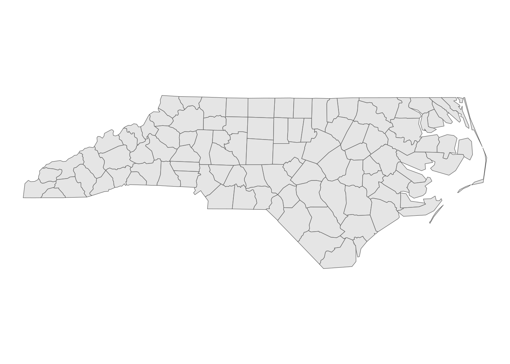
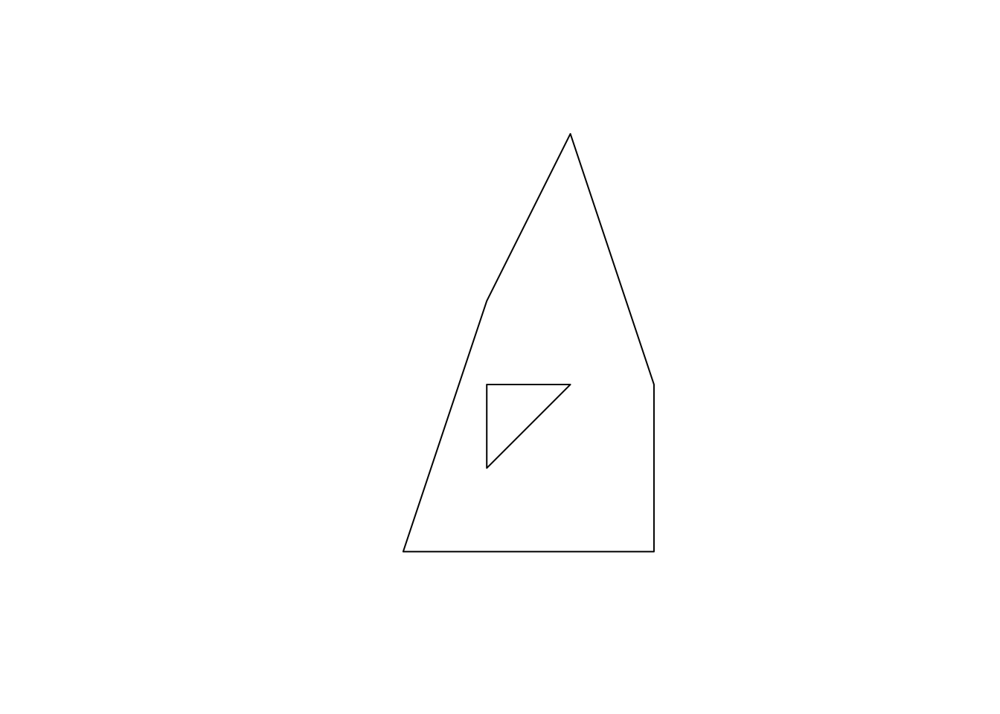
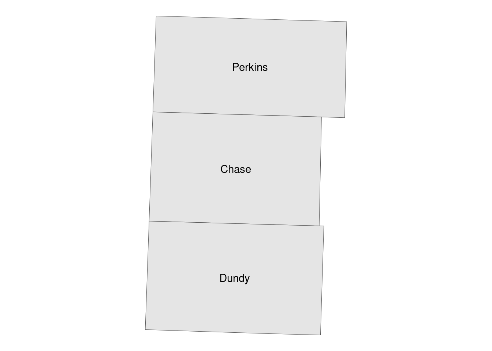
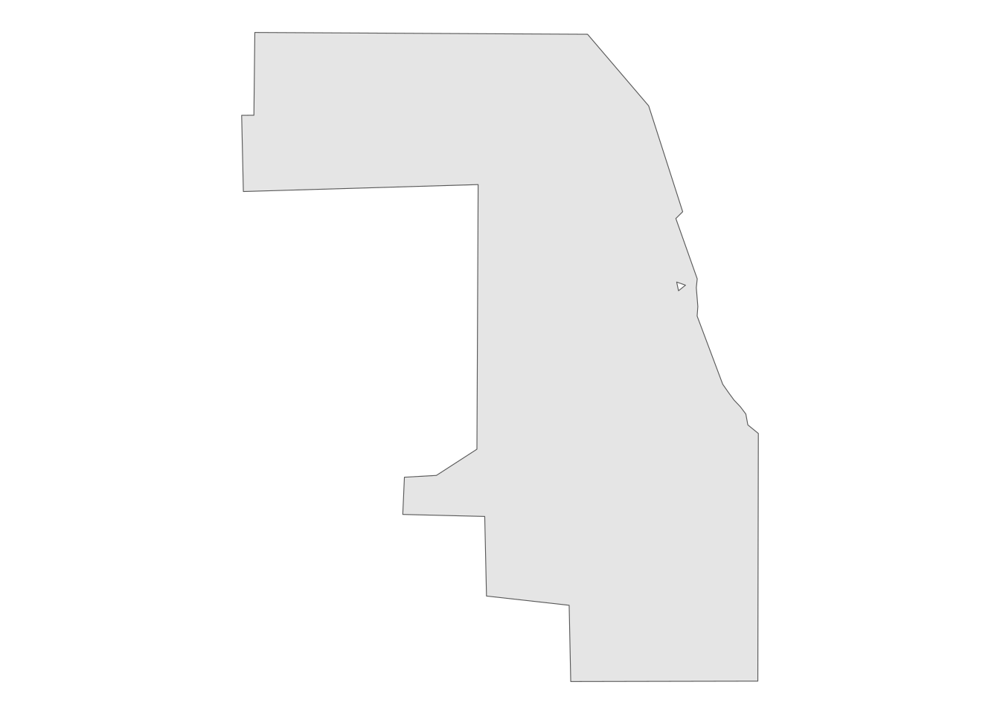

if (!require("pacman")) install.packages("pacman")
pacman::p_load(
sf, # vector data operations
tidyverse, # data wrangling
data.table, # data wrangling
tmap, # make maps
mapview, # create an interactive map
patchwork, # arranging maps
rmapshaper
)Geospatial with R
Handling vector data with sf
This is my practice sections following R as GIS for Economists.
Basics
Load the packages:
#--- a dataset that comes with the sf package ---#
nc <- sf::st_read(system.file("shape/nc.shp", package = "sf"))Reading layer `nc' from data source
`/home/himakun/R/x86_64-pc-linux-gnu-library/4.4/sf/shape/nc.shp'
using driver `ESRI Shapefile'
Simple feature collection with 100 features and 14 fields
Geometry type: MULTIPOLYGON
Dimension: XY
Bounding box: xmin: -84.32385 ymin: 33.88199 xmax: -75.45698 ymax: 36.58965
Geodetic CRS: NAD27ggplot() +
geom_sf(data = nc) +
theme_void()
head(nc)Simple feature collection with 6 features and 14 fields
Geometry type: MULTIPOLYGON
Dimension: XY
Bounding box: xmin: -81.74107 ymin: 36.07282 xmax: -75.77316 ymax: 36.58965
Geodetic CRS: NAD27
AREA PERIMETER CNTY_ CNTY_ID NAME FIPS FIPSNO CRESS_ID BIR74 SID74
1 0.114 1.442 1825 1825 Ashe 37009 37009 5 1091 1
2 0.061 1.231 1827 1827 Alleghany 37005 37005 3 487 0
3 0.143 1.630 1828 1828 Surry 37171 37171 86 3188 5
4 0.070 2.968 1831 1831 Currituck 37053 37053 27 508 1
5 0.153 2.206 1832 1832 Northampton 37131 37131 66 1421 9
6 0.097 1.670 1833 1833 Hertford 37091 37091 46 1452 7
NWBIR74 BIR79 SID79 NWBIR79 geometry
1 10 1364 0 19 MULTIPOLYGON (((-81.47276 3...
2 10 542 3 12 MULTIPOLYGON (((-81.23989 3...
3 208 3616 6 260 MULTIPOLYGON (((-80.45634 3...
4 123 830 2 145 MULTIPOLYGON (((-76.00897 3...
5 1066 1606 3 1197 MULTIPOLYGON (((-77.21767 3...
6 954 1838 5 1237 MULTIPOLYGON (((-76.74506 3...sfg: LINESTRING
#--- collection of points in a matrix form ---#
s1 <- rbind(c(2, 3), c(3, 4), c(3, 5), c(1, 5))
#--- see what s1 looks like ---#
s1 [,1] [,2]
[1,] 2 3
[2,] 3 4
[3,] 3 5
[4,] 1 5#--- create a "LINESTRING" ---#
a_linestring <- sf::st_linestring(s1)
#--- check the class ---#
class(a_linestring)[1] "XY" "LINESTRING" "sfg" sfg: POLYGON
#--- a hole within p1 ---#
p1 <- rbind(c(0, 0), c(3, 0), c(3, 2), c(2, 5), c(1, 3), c(0, 0))
p2 <- rbind(c(1, 1), c(1, 2), c(2, 2), c(1, 1))
#--- create a polygon with hole ---#
a_plygon_with_a_hole <- sf::st_polygon(list(p1, p2))
plot(a_plygon_with_a_hole)
Creating sfc object or sf object:
#--- create an sfc ---#
sfc_ex <- sf::st_sfc(list(a_linestring, a_plygon_with_a_hole))
#--- create a data.frame ---#
df_ex <- data.frame(name = c("A", "B"))
#--- add the sfc as a column ---#
df_ex$geometry <- sfc_ex
#--- take a look ---#
df_ex name geometry
1 A LINESTRING (2 3, 3 4, 3 5, ...
2 B POLYGON ((0 0, 3 0, 3 2, 2 ...#--- let R recognize the data frame as sf ---#
sf_ex <- sf::st_as_sf(df_ex)
#--- see what it looks like ---#
sf_exSimple feature collection with 2 features and 1 field
Geometry type: GEOMETRY
Dimension: XY
Bounding box: xmin: 0 ymin: 0 xmax: 3 ymax: 5
CRS: NA
name geometry
1 A LINESTRING (2 3, 3 4, 3 5, ...
2 B POLYGON ((0 0, 3 0, 3 2, 2 ...Read shapefile:
#--- read a NE county boundary shapefile ---#
nc_loaded <- sf::st_read("Data/nc.shp")Reading layer `nc' from data source
`/home/himakun/Documents/tools/computing/Data/nc.shp' using driver `ESRI Shapefile'
Simple feature collection with 100 features and 1 field
Geometry type: MULTIPOLYGON
Dimension: XY
Bounding box: xmin: -84.32385 ymin: 33.88199 xmax: -75.45698 ymax: 36.58965
Geodetic CRS: NAD27Projection with different CRS:
sf::st_crs(nc)Coordinate Reference System:
User input: NAD27
wkt:
GEOGCRS["NAD27",
DATUM["North American Datum 1927",
ELLIPSOID["Clarke 1866",6378206.4,294.978698213898,
LENGTHUNIT["metre",1]]],
PRIMEM["Greenwich",0,
ANGLEUNIT["degree",0.0174532925199433]],
CS[ellipsoidal,2],
AXIS["latitude",north,
ORDER[1],
ANGLEUNIT["degree",0.0174532925199433]],
AXIS["longitude",east,
ORDER[2],
ANGLEUNIT["degree",0.0174532925199433]],
ID["EPSG",4267]]Change the CRS projection:
#--- transform ---#
nc_wgs84 <- sf::st_transform(nc, 4326)
#--- check if the transformation was successful ---#
sf::st_crs(nc_wgs84)Coordinate Reference System:
User input: EPSG:4326
wkt:
GEOGCRS["WGS 84",
ENSEMBLE["World Geodetic System 1984 ensemble",
MEMBER["World Geodetic System 1984 (Transit)"],
MEMBER["World Geodetic System 1984 (G730)"],
MEMBER["World Geodetic System 1984 (G873)"],
MEMBER["World Geodetic System 1984 (G1150)"],
MEMBER["World Geodetic System 1984 (G1674)"],
MEMBER["World Geodetic System 1984 (G1762)"],
MEMBER["World Geodetic System 1984 (G2139)"],
ELLIPSOID["WGS 84",6378137,298.257223563,
LENGTHUNIT["metre",1]],
ENSEMBLEACCURACY[2.0]],
PRIMEM["Greenwich",0,
ANGLEUNIT["degree",0.0174532925199433]],
CS[ellipsoidal,2],
AXIS["geodetic latitude (Lat)",north,
ORDER[1],
ANGLEUNIT["degree",0.0174532925199433]],
AXIS["geodetic longitude (Lon)",east,
ORDER[2],
ANGLEUNIT["degree",0.0174532925199433]],
USAGE[
SCOPE["Horizontal component of 3D system."],
AREA["World."],
BBOX[-90,-180,90,180]],
ID["EPSG",4326]]#--- transform ---#
nc_utm17N <- sf::st_transform(nc_wgs84, 26917)
#--- check if the transformation was successful ---#
sf::st_crs(nc_utm17N)Coordinate Reference System:
User input: EPSG:26917
wkt:
PROJCRS["NAD83 / UTM zone 17N",
BASEGEOGCRS["NAD83",
DATUM["North American Datum 1983",
ELLIPSOID["GRS 1980",6378137,298.257222101,
LENGTHUNIT["metre",1]]],
PRIMEM["Greenwich",0,
ANGLEUNIT["degree",0.0174532925199433]],
ID["EPSG",4269]],
CONVERSION["UTM zone 17N",
METHOD["Transverse Mercator",
ID["EPSG",9807]],
PARAMETER["Latitude of natural origin",0,
ANGLEUNIT["degree",0.0174532925199433],
ID["EPSG",8801]],
PARAMETER["Longitude of natural origin",-81,
ANGLEUNIT["degree",0.0174532925199433],
ID["EPSG",8802]],
PARAMETER["Scale factor at natural origin",0.9996,
SCALEUNIT["unity",1],
ID["EPSG",8805]],
PARAMETER["False easting",500000,
LENGTHUNIT["metre",1],
ID["EPSG",8806]],
PARAMETER["False northing",0,
LENGTHUNIT["metre",1],
ID["EPSG",8807]]],
CS[Cartesian,2],
AXIS["(E)",east,
ORDER[1],
LENGTHUNIT["metre",1]],
AXIS["(N)",north,
ORDER[2],
LENGTHUNIT["metre",1]],
USAGE[
SCOPE["Engineering survey, topographic mapping."],
AREA["North America - between 84°W and 78°W - onshore and offshore. Canada - Nunavut; Ontario; Quebec. United States (USA) - Florida; Georgia; Kentucky; Maryland; Michigan; New York; North Carolina; Ohio; Pennsylvania; South Carolina; Tennessee; Virginia; West Virginia."],
BBOX[23.81,-84,84,-78]],
ID["EPSG",26917]]#--- transform ---#
nc_utm17N_2 <- sf::st_transform(nc_wgs84, sf::st_crs(nc_utm17N))
#--- check if the transformation was successful ---#
sf::st_crs(nc_utm17N_2)Coordinate Reference System:
User input: EPSG:26917
wkt:
PROJCRS["NAD83 / UTM zone 17N",
BASEGEOGCRS["NAD83",
DATUM["North American Datum 1983",
ELLIPSOID["GRS 1980",6378137,298.257222101,
LENGTHUNIT["metre",1]]],
PRIMEM["Greenwich",0,
ANGLEUNIT["degree",0.0174532925199433]],
ID["EPSG",4269]],
CONVERSION["UTM zone 17N",
METHOD["Transverse Mercator",
ID["EPSG",9807]],
PARAMETER["Latitude of natural origin",0,
ANGLEUNIT["degree",0.0174532925199433],
ID["EPSG",8801]],
PARAMETER["Longitude of natural origin",-81,
ANGLEUNIT["degree",0.0174532925199433],
ID["EPSG",8802]],
PARAMETER["Scale factor at natural origin",0.9996,
SCALEUNIT["unity",1],
ID["EPSG",8805]],
PARAMETER["False easting",500000,
LENGTHUNIT["metre",1],
ID["EPSG",8806]],
PARAMETER["False northing",0,
LENGTHUNIT["metre",1],
ID["EPSG",8807]]],
CS[Cartesian,2],
AXIS["(E)",east,
ORDER[1],
LENGTHUNIT["metre",1]],
AXIS["(N)",north,
ORDER[2],
LENGTHUNIT["metre",1]],
USAGE[
SCOPE["Engineering survey, topographic mapping."],
AREA["North America - between 84°W and 78°W - onshore and offshore. Canada - Nunavut; Ontario; Quebec. United States (USA) - Florida; Georgia; Kentucky; Maryland; Michigan; New York; North Carolina; Ohio; Pennsylvania; South Carolina; Tennessee; Virginia; West Virginia."],
BBOX[23.81,-84,84,-78]],
ID["EPSG",26917]]Turning dataframe into sf object
#--- read irrigation well registration data ---#
(
wells <- readRDS("Data/well_registration.rds")
)Key: <wellid>
wellid ownerid nrdname acres regdate section longdd
<int> <int> <char> <num> <char> <int> <num>
1: 2 106106 Central Platte 160 12/30/55 3 -99.58401
2: 3 14133 South Platte 46 4/29/31 8 -102.62495
3: 4 14133 South Platte 46 4/29/31 8 -102.62495
4: 5 14133 South Platte 46 4/29/31 8 -102.62495
5: 6 15837 Central Platte 160 8/29/32 20 -99.62580
---
105818: 244568 135045 Upper Big Blue NA 8/26/16 30 -97.58872
105819: 244569 105428 Little Blue NA 8/26/16 24 -97.60752
105820: 244570 135045 Upper Big Blue NA 8/26/16 30 -97.58294
105821: 244571 135045 Upper Big Blue NA 8/26/16 25 -97.59775
105822: 244572 105428 Little Blue NA 8/26/16 15 -97.64086
latdd
<num>
1: 40.69825
2: 41.11699
3: 41.11699
4: 41.11699
5: 40.73268
---
105818: 40.89017
105819: 40.13257
105820: 40.88722
105821: 40.89639
105822: 40.13380#--- recognize it as an sf ---#
wells_sf <- sf::st_as_sf(wells, coords = c("longdd", "latdd")) %>%
st_set_crs(4269)
#--- take a look at the data ---#
head(wells_sf[, 1:5])Simple feature collection with 6 features and 5 fields
Geometry type: POINT
Dimension: XY
Bounding box: xmin: -102.6249 ymin: 40.69824 xmax: -99.58401 ymax: 41.11699
Geodetic CRS: NAD83
wellid ownerid nrdname acres regdate geometry
1 2 106106 Central Platte 160 12/30/55 POINT (-99.58401 40.69825)
2 3 14133 South Platte 46 4/29/31 POINT (-102.6249 41.11699)
3 4 14133 South Platte 46 4/29/31 POINT (-102.6249 41.11699)
4 5 14133 South Platte 46 4/29/31 POINT (-102.6249 41.11699)
5 6 15837 Central Platte 160 8/29/32 POINT (-99.6258 40.73268)
6 7 90248 Central Platte 120 2/15/35 POINT (-99.64524 40.73164)Conversion to and from sp objects
#--- conversion ---#
wells_sp <- as(wells_sf, "Spatial")
#--- check the class ---#
class(wells_sp)[1] "SpatialPointsDataFrame"
attr(,"package")
[1] "sp"#--- revert back to sf ---#
wells_sf <- sf::st_as_sf(wells_sp)
#--- check the class ---#
class(wells_sf)[1] "sf" "data.frame"Reverting sf object back into dataframe
#--- remove geometry ---#
wells_no_longer_sf <- sf::st_drop_geometry(wells_sf)
#--- take a look ---#
head(wells_no_longer_sf) wellid ownerid nrdname acres regdate section
1 2 106106 Central Platte 160 12/30/55 3
2 3 14133 South Platte 46 4/29/31 8
3 4 14133 South Platte 46 4/29/31 8
4 5 14133 South Platte 46 4/29/31 8
5 6 15837 Central Platte 160 8/29/32 20
6 7 90248 Central Platte 120 2/15/35 19#--- read wells location data ---#
urnrd_wells_sf <-
readRDS("Data/urnrd_wells.rds") %>%
#--- project to UTM 14N WGS 84 ---#
sf::st_transform(32614)
#--- create a one-mile buffer around the wells ---#
wells_buffer <- sf::st_buffer(urnrd_wells_sf, dist = 1600)
head(wells_buffer)Simple feature collection with 6 features and 6 fields
Geometry type: POLYGON
Dimension: XY
Bounding box: xmin: 251786.6 ymin: 4483187 xmax: 301596 ymax: 4499464
Projected CRS: WGS 84 / UTM zone 14N
wellid ownerid nrdname acres regdate section
1 79 98705 Upper Republican 400 12/9/40 5
2 109 115260 Upper Republican 80 3/11/41 20
3 161 115260 Upper Republican 50 3/8/43 17
4 162 41350 Upper Republican 140 3/23/43 28
5 164 105393 Upper Republican 90 7/6/43 12
6 166 51341 Upper Republican 110 8/31/43 18
geometry
1 POLYGON ((277371.9 4497864,...
2 POLYGON ((256979.6 4484787,...
3 POLYGON ((256993.1 4485173,...
4 POLYGON ((258354.5 4492808,...
5 POLYGON ((301596 4485998, 3...
6 POLYGON ((254986.6 4485670,...ggplot() +
geom_sf(data = urnrd_wells_sf, size = 0.6, color = "red") +
geom_sf(data = wells_buffer, fill = NA) +
theme_void()
NE_counties <-
readRDS("Data/NE_county_borders.rds") %>%
dplyr::filter(NAME %in% c("Perkins", "Dundy", "Chase")) %>%
sf::st_transform(32614)
#--- generate area by polygon ---#
(
NE_counties <- dplyr::mutate(NE_counties, area = st_area(NE_counties))
)Simple feature collection with 3 features and 10 fields
Geometry type: MULTIPOLYGON
Dimension: XY
Bounding box: xmin: 239494.1 ymin: 4430632 xmax: 310778.1 ymax: 4543676
Projected CRS: WGS 84 / UTM zone 14N
STATEFP COUNTYFP COUNTYNS AFFGEOID GEOID NAME LSAD ALAND
1 31 135 00835889 0500000US31135 31135 Perkins 06 2287828025
2 31 029 00835836 0500000US31029 31029 Chase 06 2316533447
3 31 057 00835850 0500000US31057 31057 Dundy 06 2381956151
AWATER geometry area
1 2840176 MULTIPOLYGON (((243340.2 45... 2302174854 [m^2]
2 7978172 MULTIPOLYGON (((241201.4 44... 2316908196 [m^2]
3 3046331 MULTIPOLYGON (((240811.3 44... 2389890530 [m^2]#--- create centroids ---#
(
NE_centroids <- sf::st_centroid(NE_counties)
)Warning: st_centroid assumes attributes are constant over geometriesSimple feature collection with 3 features and 10 fields
Geometry type: POINT
Dimension: XY
Bounding box: xmin: 271156.7 ymin: 4450826 xmax: 276594.1 ymax: 4525635
Projected CRS: WGS 84 / UTM zone 14N
STATEFP COUNTYFP COUNTYNS AFFGEOID GEOID NAME LSAD ALAND
1 31 135 00835889 0500000US31135 31135 Perkins 06 2287828025
2 31 029 00835836 0500000US31029 31029 Chase 06 2316533447
3 31 057 00835850 0500000US31057 31057 Dundy 06 2381956151
AWATER geometry area
1 2840176 POINT (276594.1 4525635) 2302174854 [m^2]
2 7978172 POINT (271469.9 4489429) 2316908196 [m^2]
3 3046331 POINT (271156.7 4450826) 2389890530 [m^2]ggplot() +
geom_sf(data = NE_counties) +
geom_sf_text(data = NE_centroids, aes(label = NAME)) +
theme_void()
IL_counties <- sf::st_read("Data/IL_county_detailed.geojson")Reading layer `IL_county_detailed' from data source
`/home/himakun/Documents/tools/computing/Data/IL_county_detailed.geojson'
using driver `GeoJSON'
Simple feature collection with 102 features and 61 fields
Geometry type: MULTIPOLYGON
Dimension: XY
Bounding box: xmin: -91.51309 ymin: 36.9703 xmax: -87.4952 ymax: 42.50849
Geodetic CRS: WGS 84IL_counties_mssimplified <- rmapshaper::ms_simplify(IL_counties, keep = 0.01)
Cook <- filter(IL_counties, NAME == "Cook County")
Cook_simplify <- sf::st_simplify(Cook, dTolerance = 1000)
ggplot() +
geom_sf(data = Cook_simplify) +
theme_void()